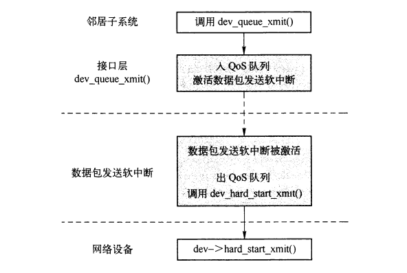
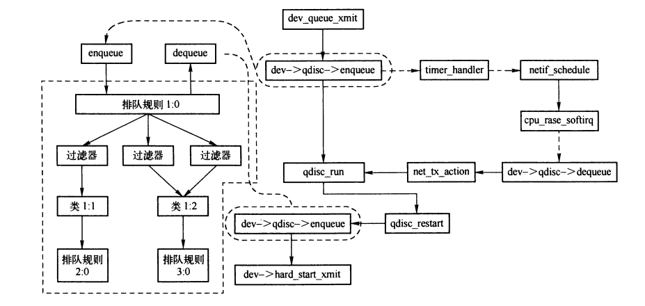
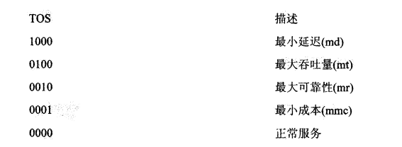
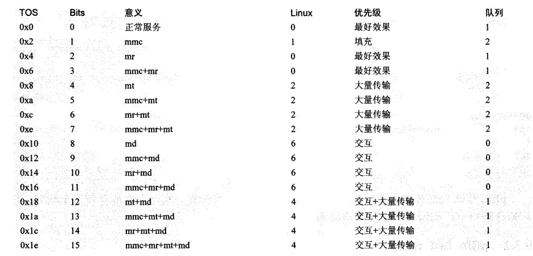
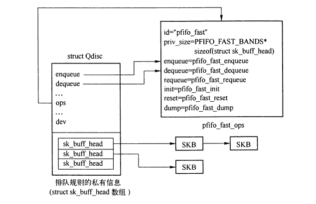
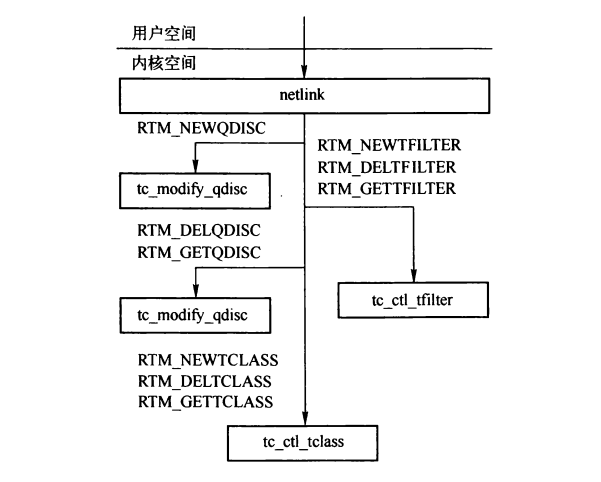
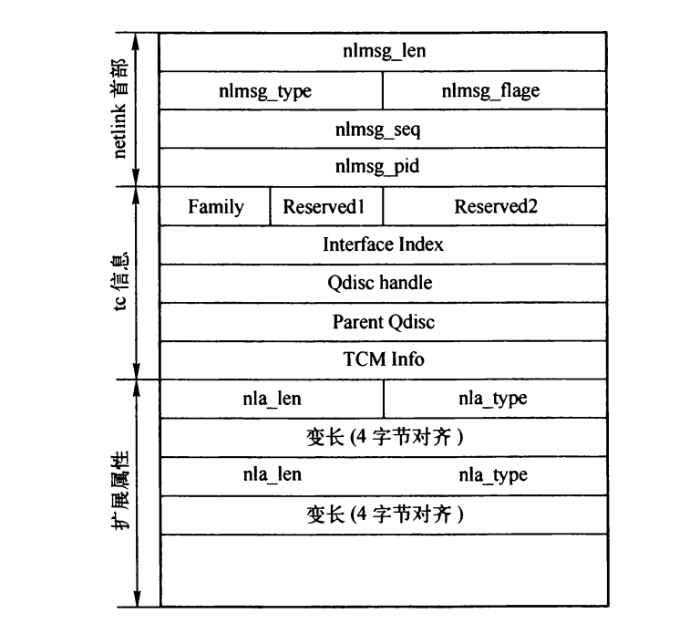
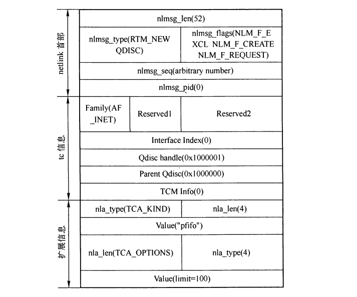

流量控制
Table of Contents
1. 流量控制的输出

Figure 1: 流量控制在接口层输出的位置
链路层中数据包通过dev_queue_xmit()输出， 其中如果需要通过QOS发送，则排入QOS队列，之后激活数据包输出软中断，之后在软中断中，从QOS队列获取优先级最高的数据包，调用dev_hard_start_xmit()输出到网络设备。否则直接调用网卡驱动注册的发送函数发送。
1.1. dev_queue_xmit()
int dev_queue_xmit(struct sk_buff *skb) { //...... q = rcu_dereference(dev->qdisc); #ifdef CONFIG_NET_CLS_ACT skb->tc_verd = SET_TC_AT(skb->tc_verd,AT_EGRESS); #endif if (q->enqueue) {//队列是否定义了入队函数 spin_lock(&dev->queue_lock); q = dev->qdisc; if (q->enqueue) { rc = q->enqueue(skb, q); qdisc_run(dev);//通过qdisc_run()调度数据包输出软中断 spin_unlock(&dev->queue_lock); rc = rc == NET_XMIT_BYPASS ? NET_XMIT_SUCCESS : rc; goto out; } spin_unlock(&dev->queue_lock); } //...... }
dev_queue_xmit中，通过qdisc_run()调度数据包输出软中断。
static inline void qdisc_run(struct net_device *dev) { if (!netif_queue_stopped(dev) &&//设备是否处于启用状态 !test_and_set_bit(__LINK_STATE_QDISC_RUNNING, &dev->state)) //没有处于流量控制调度队列过程 __qdisc_run(dev); } void __qdisc_run(struct net_device *dev) { if (unlikely(dev->qdisc == &noop_qdisc))//排队规则处于初始状态，直接退出 goto out; //调用qdisc_restart()发送，直到发送完毕，或者设备为停止状态。 while (qdisc_restart(dev) < 0 && !netif_queue_stopped(dev)) /* NOTHING */; out: clear_bit(__LINK_STATE_QDISC_RUNNING, &dev->state); }
1.2. qdisc_restart()
qdisc_restart()的主要作用是从排队规则中获取一个可以输出的报文，然后将其输出到网络设备。
/* Returns: 0 - 队列为空 >0 - 队列不为空，但是发送失败，需要等待下次发送 <0 - 队列不为空。 但是由于上锁失败 或者 发送成功后，需要等待下次发送 */ static inline int qdisc_restart(struct net_device *dev) { struct Qdisc *q = dev->qdisc; struct sk_buff *skb; //如果还有上次没有发送完的GSO数据包，则先发送GSO，否则从排队规则队列出队SKB if (((skb = dev->gso_skb)) || ((skb = q->dequeue(q)))) { unsigned nolock = (dev->features & NETIF_F_LLTX); dev->gso_skb = NULL;//先将gso_skb清零，如果本次还有gso数据包没发完，则重新设置 if (!nolock) {//输出需要上锁 if (!netif_tx_trylock(dev)) {//上锁失败 collision: //如果是当前CPU获取了锁，则判定出现死锁 if (dev->xmit_lock_owner == smp_processor_id()) { kfree_skb(skb); if (net_ratelimit()) printk(KERN_DEBUG "Dead loop on netdevice %s, fix it urgently!\n", dev->name); return -1; } __get_cpu_var(netdev_rx_stat).cpu_collision++;//更新统计 goto requeue;//重新入队 } } { /* And release queue */ spin_unlock(&dev->queue_lock); if (!netif_queue_stopped(dev)) { //再次检测网络设备是否关闭排队功能 int ret; ret = dev_hard_start_xmit(skb, dev); //通过设备输出数据包 if (ret == NETDEV_TX_OK) { if (!nolock) {//发送成功，释放锁 netif_tx_unlock(dev); } spin_lock(&dev->queue_lock); return -1; } if (ret == NETDEV_TX_LOCKED && nolock) {//获取锁失败导致的发送失败 spin_lock(&dev->queue_lock); goto collision; } } //设备关闭排队功能的情况： if (!nolock) { netif_tx_unlock(dev); } spin_lock(&dev->queue_lock); q = dev->qdisc; } requeue: //重新将数据包入队 if (skb->next) dev->gso_skb = skb; else q->ops->requeue(skb, q); netif_schedule(dev); return 1; } BUG_ON((int) q->q.qlen < 0); return q->q.qlen; }
2. 流量控制的三种元素
- 排队规则
- 类
- 过滤器
启用流量控制的情况下，每个网络设备至少会配置一个排队规则。待发送报文输出到链路层时，被按规则排入到队列。
类定义在排队规则中，通过排队规则的类来区分报文。排队规则中可以把保温分配到不同的类。排队规则可以没有类，也可以有多个类。
过滤器用来将输出报文分配到 排队规则的分类 中。一个过滤器包含若干个匹配条件，如果符合条件，则按对应的过滤器分类。


Figure 2: 流量控制与接口层输出之间的关联
- dev_queue_xmit()输出时，如果支持流量控制，则调用根排队规则的enqueue函数进行入队。
- qdisc_restart() 中出队时，则调用根排队规则的dequeue函数。
2.1. 排队规则
排队规则包括无类和有类两种：
- 无类的排队规则内部不包含可配置子类队列。
- 有类的排队规则可以包含根多的类，每个类有可以包含一个排队规则。
2.1.1. Qdisc结构
struct Qdisc { //队列提供的入队操作接口 int (*enqueue)(struct sk_buff *skb, struct Qdisc *dev); struct sk_buff * (*dequeue)(struct Qdisc *dev);//出队操作接口 unsigned flags; #define TCQ_F_BUILTIN 1 //标识排队规则是空排队规则 #define TCQ_F_THROTTLED 2 //标识排队规则由于限制而处于延时出队的状态中 #define TCQ_F_INGRESS 4 //排队规则是输入排队规则 int padded; struct Qdisc_ops *ops; //排队规则提供的操作接口 u32 handle; //排队规则、类、过滤器都有一个32位的句柄 u32 parent; //父节点句柄 atomic_t refcnt; //引用计数 struct sk_buff_head q; //队列中的数据包链表头 struct net_device *dev; //所属网络设备 struct list_head list; //用于链接到所配置的网络设备上 struct gnet_stats_basic bstats; //入队报文统计 struct gnet_stats_queue qstats; //队列的统计数据 struct gnet_stats_rate_est rate_est; //队列的当前速率 spinlock_t *stats_lock; struct rcu_head q_rcu; int (*reshape_fail)(struct sk_buff *skb,struct Qdisc *q); struct Qdisc *__parent; };
2.1.2. Qdisc_ops结构
Qdisc_ops结构用来描述队列操作的接口，每个排队规则都必须实现该接口。
struct Qdisc_ops { struct Qdisc_ops *next; //用于链接已注册的各种排队规则操作接口 struct Qdisc_class_ops *cl_ops; //提供的类操作接口 char id[IFNAMSIZ]; //内部标识符，通常是排队规则名 int priv_size; //排队规则的私有信息块大小 //数据包的入队函数 int (*enqueue)(struct sk_buff *, struct Qdisc *); //数据包的出队函数 struct sk_buff * (*dequeue)(struct Qdisc *); //先前出队数据包重新入队函数 int (*requeue)(struct sk_buff *, struct Qdisc *); //从队列移除并丢弃数据包的函数 unsigned int (*drop)(struct Qdisc *); //初始化排队规则的函数 int (*init)(struct Qdisc *, struct rtattr *arg); void (*reset)(struct Qdisc *); void (*destroy)(struct Qdisc *); int (*change)(struct Qdisc *, struct rtattr *arg); int (*dump)(struct Qdisc *, struct sk_buff *); int (*dump_stats)(struct Qdisc *, struct gnet_dump *); struct module *owner; };
2.1.3. 排队规则相关函数
- dev_init_scheduler() 用于初始化排队规则的相关数据，由register_netdevice()函数调用。
- pktsched_init() 通过subsys_initcall宏添加到初始化列表，由系统初始化时调用，主要用于初始化 RT_NETLINK接口，并且调用 register_qdisc() 注册bfifo和pfifo排队规则。
- register_qdisc() 将新的排队规则注册到系统中。
- unregister_qdisc() 注销排队规则。
- qdisc_look_ops() 根据排队规则名，查找已注册的排队规则。主要在创建规则时调用（qdisc_create()）。
- qdisc_alloc() 分配内存，建立排队规则，并初始化排队规则相关成员，并和操作接口绑定，设置排队规则的enqueue和dequeue接口。
- qdisc_create_dflt() 创建默认的排队规则。
- qdisc_create() 创建指定排队规则。
- qdisc_lookup() 根据排队规则句柄在网络设备上的排队规则中查找对应的排队规则。
- dev_activate() 初始化排队规则
void dev_activate(struct net_device *dev) { //如果善为安装有效的排队规则，则安装默认排队规则 if (dev->qdisc_sleeping == &noop_qdisc) { struct Qdisc *qdisc; if (dev->tx_queue_len) { qdisc = qdisc_create_dflt(dev, &pfifo_fast_ops, TC_H_ROOT); if (qdisc == NULL) { printk(KERN_INFO "%s: activation failed\n", dev->name); return; } write_lock(&qdisc_tree_lock); list_add_tail(&qdisc->list, &dev->qdisc_list); write_unlock(&qdisc_tree_lock); } else { qdisc = &noqueue_qdisc; } write_lock(&qdisc_tree_lock); dev->qdisc_sleeping = qdisc; write_unlock(&qdisc_tree_lock); } //网络设备是否处于可传递数据包状态 if (!netif_carrier_ok(dev)) /* 延迟应用排队规则，直到变为可传递状态 */ return; //应用排队规则 spin_lock_bh(&dev->queue_lock); rcu_assign_pointer(dev->qdisc, dev->qdisc_sleeping); if (dev->qdisc != &noqueue_qdisc) { dev->trans_start = jiffies; dev_watchdog_up(dev); } spin_unlock_bh(&dev->queue_lock); }
- dev_deactivate() 将网络设备的排队规则设置为空规则，并停止发送报文。
void dev_deactivate(struct net_device *dev) { struct Qdisc *qdisc; spin_lock_bh(&dev->queue_lock); qdisc = dev->qdisc; dev->qdisc = &noop_qdisc; //设置为空规则 qdisc_reset(qdisc); //重新初始化排队规则 spin_unlock_bh(&dev->queue_lock); dev_watchdog_down(dev); /* 让出处理器，唤醒 dev_queue_xmit 的执行进程 */ synchronize_rcu(); /* 网络设备还处于留恋控制的调度队列过程中 */ while (test_bit(__LINK_STATE_QDISC_RUNNING, &dev->state)) yield(); //让出处理器，尽可能快速完成qdisc_run的调用 if (dev->gso_skb) { //释放缓存的gso报文 kfree_skb(dev->gso_skb); dev->gso_skb = NULL; } }
2.2. 类
2.2.1. xxx_class结构
每个类至少被绑定到一个过滤器。通过过滤器将报文分配到排队规则的不同类中。
由于各种类的实现存在着巨大差别，但是每个类都有一个与排队规则相似的唯一类标识符classid，用于标识一种类。
类的主编号对应与关联的排队规则，辅助编号指定该排队规则的类，辅编号的范围从0x0到0xFFFF，在单个排队规则中唯一。
struct xxx_class { u32 classid; //....... struct tcf_proto *filter_list; //...... };
2.2.2. Qdisc_class_ops结构
Qdisc_class_ops结构是用于类操作的接口，排队规则如果要实现分类，就必须实现该接口。
struct Qdisc_class_ops { /* Child qdisc manipulation */ //用于将一个排队规则绑定到一个类，并返回先前绑定到这个类的排队规则 int (*graft)(struct Qdisc *, unsigned long cl, struct Qdisc *, struct Qdisc **); //获取当前绑定到所在类的排队规则 struct Qdisc * (*leaf)(struct Qdisc *, unsigned long cl); //用于响应队列长度的变化 void (*qlen_notify)(struct Qdisc *, unsigned long); /* Class manipulation routines */ //给定类标识符，从排队规则获取并引用类 unsigned long (*get)(struct Qdisc *, u32 classid); //递减类的引用计数，为0时，释放类 void (*put)(struct Qdisc *, unsigned long); //用于变更指定类的参数，如果不存在则创建 int (*change)(struct Qdisc *, u32, u32, struct rtattr **, unsigned long *); //用于删除并释放指定的类 int (*delete)(struct Qdisc *, unsigned long); //遍历排队规则的所有类，并调用回调函数获取类的配置数据及统计信息 void (*walk)(struct Qdisc *, struct qdisc_walker * arg); /* Filter manipulation */ //获取绑定到该类的过滤器所在链表的首结点。 struct tcf_proto ** (*tcf_chain)(struct Qdisc *, unsigned long); //在过滤器绑定到指定类之前被调用 unsigned long (*bind_tcf)(struct Qdisc *, unsigned long, u32 classid); //过滤器完成绑定到指定类后被调用 void (*unbind_tcf)(struct Qdisc *, unsigned long); /* rtnetlink specific */ //用于输出类的配置参数和统计信息 int (*dump)(struct Qdisc *, unsigned long, struct sk_buff *skb, struct tcmsg*); int (*dump_stats)(struct Qdisc *, unsigned long, struct gnet_dump *); };
2.2.3. 类的相关函数
- qdisc_graft() 用于将一个排队规则绑定到一个类，并返回先前绑定到这个类的排队规则。
static int qdisc_graft(struct net_device *dev, struct Qdisc *parent, u32 classid, struct Qdisc *new, struct Qdisc **old) { int err = 0; struct Qdisc *q = *old; if (parent == NULL) {//没有父结点，则是根结点 if (q && q->flags&TCQ_F_INGRESS) { *old = dev_graft_qdisc(dev, q); } else { *old = dev_graft_qdisc(dev, new); } } else { struct Qdisc_class_ops *cops = parent->ops->cl_ops; err = -EINVAL; if (cops) { unsigned long cl = cops->get(parent, classid); if (cl) { //将排队规则绑定到类 err = cops->graft(parent, cl, new, old); if (new) new->parent = classid; cops->put(parent, cl); } } } return err; }
- dev_graft_qdisc() 为网络设备安装指定的根排队规则
static struct Qdisc * dev_graft_qdisc(struct net_device *dev, struct Qdisc *qdisc) { struct Qdisc *oqdisc; if (dev->flags & IFF_UP) dev_deactivate(dev); //将排队规则设置为空排队规则，并停止发送报文 qdisc_lock_tree(dev); if (qdisc && qdisc->flags&TCQ_F_INGRESS) {//输入排队规则 oqdisc = dev->qdisc_ingress; if (oqdisc && atomic_read(&oqdisc->refcnt) <= 1) { //删除排队规则 qdisc_reset(oqdisc); dev->qdisc_ingress = NULL; } else { //安装新的排队规则 dev->qdisc_ingress = qdisc; } } else { //输出排队规则 oqdisc = dev->qdisc_sleeping; //初始化当前的输出排队规则 if (oqdisc && atomic_read(&oqdisc->refcnt) <= 1) qdisc_reset(oqdisc); //安装新的排队规则 if (qdisc == NULL) qdisc = &noop_qdisc; dev->qdisc_sleeping = qdisc; dev->qdisc = &noop_qdisc;//将当前排队规则设置为空规则 } qdisc_unlock_tree(dev); if (dev->flags & IFF_UP) dev_activate(dev);//应用上面安装的排队规则（qdisc_sleeping） return oqdisc; }
- qdisc_leaf() 根据父结点和类标识符，获取当前绑定到所在类的排队规则。
2.3. 过滤器
当报文被送到一个具有多个类的排队规则时，排队规则将调用tc_classify()。
tc_classify() 首先检查过滤器是否接受skb->protol所指定的协议，然后调用过滤器的classify()做出决定是否接受或者分到哪个类中。
2.3.1. tcf_proto结构
过滤器的结构是tcf_proto。
struct tcf_proto { /* Fast access part */ struct tcf_proto *next; //用于链接多个过滤器的链表元素 void *root; //报文分类函数 int (*classify)(struct sk_buff*, struct tcf_proto*, struct tcf_result *); __be16 protocol;//网络层协议号 /* All the rest */ u32 prio; //优先级 u32 classid; //父排队规则的类标识符 struct Qdisc *q; //父排队规则 void *data; //存储特定过滤器的数据 struct tcf_proto_ops *ops; //过滤器对应的操作接口 };
2.3.2. tcf_proto_ops结构
tcf_proto_ops是用来描述过滤器的结构，如果排队规则实现了分类，则必须实现过滤器来进行分类。
struct tcf_proto_ops { struct tcf_proto_ops *next; //用于链接已注册过滤器的链表元素（tcf_proto_base） char kind[IFNAMSIZ];//过滤器标识符，通常为过滤器名 //报文分类函数 int (*classify)(struct sk_buff*, struct tcf_proto*, struct tcf_result *); //过滤器初始化函数，通常在创建过滤器之后调用 int (*init)(struct tcf_proto*); //释放过滤器 void (*destroy)(struct tcf_proto*); //将过滤器句柄映射为过滤器的内部标识符 unsigned long (*get)(struct tcf_proto*, u32 handle); //解除get得到的过滤器的引用 void (*put)(struct tcf_proto*, unsigned long); //用于配置新的过滤器或者变更一个已存在的过滤器的配置 int (*change)(struct tcf_proto*, unsigned long, u32 handle, struct rtattr **, unsigned long *); //删除过滤器的元素，过滤器内部分离为过滤器元素，通过u32类型的句柄标识内部元素。 int (*delete)(struct tcf_proto*, unsigned long); //遍历过滤器所有元素，并调用回调函数获取配置数据和统计数据 void (*walk)(struct tcf_proto*, struct tcf_walker *arg); /* rtnetlink specific */ int (*dump)(struct tcf_proto*, unsigned long, struct sk_buff *skb, struct tcmsg*); struct module *owner; }; //chassify()的输出参数 struct tcf_result { unsigned long class; u32 classid; };
| 返回值 | 描述 |
|---|---|
| TC_POLICE_UNSPEC | 不匹配，送到下个过滤器或者元素 |
| TC_POLICE_OK | 报文被过滤器接收 |
| TC_POLICE_RECLASSIFY | 违背合法参数，应该分配到一个不同的类 |
| TC_POLICE_SHOT | 被过滤器接收，但是过滤器又将其丢弃 |
2.3.3. 过滤器相关函数
- tc_filter_init() 初始化过滤器的创建、删除操作的netlink接口
- register_tcf_proto_ops() 将过滤器注册到系统过滤器链表 tcf_proto_base 中。
- unregister_tcf_proto_ops() 注销过滤器
- tcf_proto_lookup_ops() 根据过滤器名，获取过滤器
3. 默认的FIFO排队规则
Linux默认排队规则是FIFO（先进先出）排队规则。该排队规则内部有三个队列，0优先级最高，之后是1、2。
进入FIFO排队规则时，根据数据包的TOS标记，将带有最小延迟标记的数据包排入0队列。

Figure 3: TOS字段的取值

Figure 4: TOS字段与队列
FIFO排队规则的操作接口为pfifo_fast_ops:
static struct Qdisc_ops pfifo_fast_ops = { .id = "pfifo_fast", .priv_size = PFIFO_FAST_BANDS * sizeof(struct sk_buff_head), .enqueue = pfifo_fast_enqueue, .dequeue = pfifo_fast_dequeue, .requeue = pfifo_fast_requeue, .init = pfifo_fast_init, .reset = pfifo_fast_reset, .dump = pfifo_fast_dump, .owner = THIS_MODULE, };
FIFO排队规则没有类和过滤器，Qdisc实例的操作接口指向pfifo_fast_ops, 尾部的私有信息中只是三个队列：

Figure 5: FIFO排队规则的数据组织结构
3.1. pfifo_fast_init
FIFO排队规则的初始化函数。
static int pfifo_fast_init(struct Qdisc *qdisc, struct rtattr *opt) { int prio; struct sk_buff_head *list = qdisc_priv(qdisc); for (prio = 0; prio < PFIFO_FAST_BANDS; prio++) skb_queue_head_init(list + prio); return 0; }
3.2. pfifo_fast_reset()
将排队规则恢复到初始化状态。
static void pfifo_fast_reset(struct Qdisc* qdisc) { int prio; struct sk_buff_head *list = qdisc_priv(qdisc); for (prio = 0; prio < PFIFO_FAST_BANDS; prio++) __qdisc_reset_queue(qdisc, list + prio); qdisc->qstats.backlog = 0; qdisc->q.qlen = 0; }
3.3. pfifo_fast_enqueue()
FIFO的入对函数。
static int pfifo_fast_enqueue(struct sk_buff *skb, struct Qdisc* qdisc) { struct sk_buff_head *list = prio2list(skb, qdisc); if (skb_queue_len(list) < qdisc->dev->tx_queue_len) {//是否达到数据包上限 qdisc->q.qlen++; return __qdisc_enqueue_tail(skb, qdisc, list); } return qdisc_drop(skb, qdisc); }
3.4. pfifo_fast_dequeue()
static struct sk_buff *pfifo_fast_dequeue(struct Qdisc* qdisc) { int prio; struct sk_buff_head *list = qdisc_priv(qdisc); for (prio = 0; prio < PFIFO_FAST_BANDS; prio++) { if (!skb_queue_empty(list + prio)) { qdisc->q.qlen--; return __qdisc_dequeue_head(qdisc, list + prio); } } return NULL; }
3.5. pfifo_fast_requeue()
报文由于发送而出队，但是又因为其他原因没有发送，此时需要重新入队。
static int pfifo_fast_requeue(struct sk_buff *skb, struct Qdisc* qdisc) { qdisc->q.qlen++; return __qdisc_requeue(skb, qdisc, prio2list(skb, qdisc)); }
4. netlink的tc接口

Figure 6: netlink接口

Figure 7: 流量控制中的netlink消息
- Family, 8位，绑定的地址族
- Interface Index, 32位，网络设备索引
- Qdisc handle, 32位，排队规则句柄
- Parent Qdisc, 32位，父排队规则句柄
- TCM Info, 32位，对于排队规则，通常为1; 对于类，则是要绑定排队规则的句柄; 对于过滤器，高16位为优先级，低16位为网络层协议号。
- 扩展属性
- TCA_KIND 组件名称
- TCA_OPTIONS 特定属性
- TCA_STATS 一般性的统计信息
- TCA_XSTATS 特定统计信息
- TCA_RATE 用来计算速率的统计信息快照
以下是一个简单示例：当队列中的缓存报文超过100时，丢弃后续的报文，网络设备索引为0，父排队规则 100:0， 排队规则句柄 100:1。

Figure 8: 配置流量控制的例子
5. 排队规则的创建接口
通过tc工具创建排队规则时， 最终由 tc_modify_qdisc() 来处理。
static int tc_modify_qdisc(struct sk_buff *skb, struct nlmsghdr *n, void *arg) { struct tcmsg *tcm; struct rtattr **tca; struct net_device *dev; u32 clid; struct Qdisc *q, *p; int err; replay: /* Reinit, just in case something touches this. */ tcm = NLMSG_DATA(n); //转化为流量控制消息 tca = arg; clid = tcm->tcm_parent; q = p = NULL; if ((dev = __dev_get_by_index(tcm->tcm_ifindex)) == NULL) //获取网络设备 return -ENODEV; if (clid) { //存在父排队规则的情况 if (clid != TC_H_ROOT) {//父排队规则不是根排队规则 if (clid != TC_H_INGRESS) { //输出排队规则 if ((p = qdisc_lookup(dev, TC_H_MAJ(clid))) == NULL) return -ENOENT; q = qdisc_leaf(p, clid); } else { /*ingress */ q = dev->qdisc_ingress; } } else {//父排队规则是根排队规则，则获取设备的qdisc_sleeping q = dev->qdisc_sleeping; } /* 如果是默认排队规则，则认为当前未配置排队规则 */ if (q && q->handle == 0) q = NULL; //当前未配置排队规则 或者未指定待创建排队规则的句柄 或者指定排队规则句柄不匹配 if (!q || !tcm->tcm_handle || q->handle != tcm->tcm_handle) { if (tcm->tcm_handle) { //指定了配置排队规则的句柄 //已经配置排队规则，但没有设置可替换标志 if (q && !(n->nlmsg_flags&NLM_F_REPLACE)) return -EEXIST; //指定了排队规则句柄的幅编号 if (TC_H_MIN(tcm->tcm_handle)) return -EINVAL; //通过句柄查找排队规则，没有找到则创建 if ((q = qdisc_lookup(dev, tcm->tcm_handle)) == NULL) goto create_n_graft; //找到排队规则，且设置了NLM_F_EXCL if (n->nlmsg_flags&NLM_F_EXCL) return -EEXIST; //tc命令的算法名和排队规则的算法名不同 if (tca[TCA_KIND-1] && rtattr_strcmp(tca[TCA_KIND-1], q->ops->id)) return -EINVAL; if (q == p || (p && check_loop(q, p, 0))) //算法出现回环 return -ELOOP; atomic_inc(&q->refcnt); //递增引用计数 goto graft; } else { if (q == NULL) //未指定排队规则，则创建 goto create_n_graft; if ((n->nlmsg_flags&NLM_F_CREATE) && (n->nlmsg_flags&NLM_F_REPLACE) && ((n->nlmsg_flags&NLM_F_EXCL) || (tca[TCA_KIND-1] && rtattr_strcmp(tca[TCA_KIND-1], q->ops->id)))) goto create_n_graft; } } } else { if (!tcm->tcm_handle) //未指定父结点句柄 return -EINVAL; q = qdisc_lookup(dev, tcm->tcm_handle); //根据句柄获取排队规则 } /* Change qdisc parameters */ if (q == NULL) //没有获取到排队规则 return -ENOENT; if (n->nlmsg_flags&NLM_F_EXCL) //获取到了待修改的排队规则，但是参数设置了NLM_F_EXCL return -EEXIST; if (tca[TCA_KIND-1] && rtattr_strcmp(tca[TCA_KIND-1], q->ops->id)) //存在算法名，但是和排队规则的算法名不同 return -EINVAL; err = qdisc_change(q, tca); //修改排队规则参数 if (err == 0) qdisc_notify(skb, n, clid, NULL, q); //发送确认消息给修改配置的进程 return err; create_n_graft: //创建排队规则 if (!(n->nlmsg_flags&NLM_F_CREATE)) return -ENOENT; if (clid == TC_H_INGRESS) q = qdisc_create(dev, tcm->tcm_parent, tca, &err); else q = qdisc_create(dev, tcm->tcm_handle, tca, &err); if (q == NULL) { if (err == -EAGAIN) goto replay; return err; } graft: //排队规则创建或者修改成功，需要重新绑定类。 if (1) { struct Qdisc *old_q = NULL; err = qdisc_graft(dev, p, clid, q, &old_q); //重新绑定类 if (err) {//失败则释放排队规则 if (q) { spin_lock_bh(&dev->queue_lock); qdisc_destroy(q); spin_unlock_bh(&dev->queue_lock); } return err; } qdisc_notify(skb, n, clid, old_q, q);//通知进程 if (old_q) {//释放原先的排队规则 spin_lock_bh(&dev->queue_lock); qdisc_destroy(old_q); spin_unlock_bh(&dev->queue_lock); } } return 0; }
5.1. 类的创建接口
使用tc工具配置排队规则的类时，最终通过tc_ctl_tclass()处理。
static int tc_ctl_tclass(struct sk_buff *skb, struct nlmsghdr *n, void *arg) { struct tcmsg *tcm = NLMSG_DATA(n); struct rtattr **tca = arg; struct net_device *dev; struct Qdisc *q = NULL; struct Qdisc_class_ops *cops; unsigned long cl = 0; unsigned long new_cl; u32 pid = tcm->tcm_parent; u32 clid = tcm->tcm_handle; u32 qid = TC_H_MAJ(clid); int err; if ((dev = __dev_get_by_index(tcm->tcm_ifindex)) == NULL) return -ENODEV; /* 首先确定要绑定的排队规则，及其父排队规则的句柄，确定规则见下表 */ if (pid != TC_H_ROOT) { //父排队规则不是根排队规则 u32 qid1 = TC_H_MAJ(pid); if (qid && qid1) {// /* 指定的排队规则和父排队规则的高16位主编号必须相同 */ if (qid != qid1) return -EINVAL; } else if (qid1) {//未指定排队规则主编号，从父排队规则获取 qid = qid1; } else if (qid == 0)//都没有指定，则从网络设备的qdisc_sleeping中获取 qid = dev->qdisc_sleeping->handle; //确定了父排队规则主编号 if (pid) pid = TC_H_MAKE(qid, pid); //重新计算父排队规则句柄 } else {//父排队规则是根排队规则 if (qid == 0) //为指定排队规则主编号，则从网络设备获取 qid = dev->qdisc_sleeping->handle; } /* 查找或者创建排队规则 */ if ((q = qdisc_lookup(dev, qid)) == NULL) return -ENOENT; /* 获取排队规则的类操作接口 */ cops = q->ops->cl_ops; if (cops == NULL) return -EINVAL; /* 尝试获取排队规则的类*/ if (clid == 0) { if (pid == TC_H_ROOT) clid = qid; } else clid = TC_H_MAKE(qid, clid); if (clid) cl = cops->get(q, clid); if (cl == 0) { // 没有找到类 err = -ENOENT; if (n->nlmsg_type != RTM_NEWTCLASS || !(n->nlmsg_flags&NLM_F_CREATE)) //是否指定创建命令 goto out; } else {//找到类， 根据操作类型处理 switch (n->nlmsg_type) { case RTM_NEWTCLASS: //创建 err = -EEXIST; if (n->nlmsg_flags&NLM_F_EXCL) goto out; break; case RTM_DELTCLASS: //删除 err = cops->delete(q, cl); if (err == 0) tclass_notify(skb, n, q, cl, RTM_DELTCLASS); goto out; case RTM_GETTCLASS: //获取 err = tclass_notify(skb, n, q, cl, RTM_NEWTCLASS); goto out; default: //无效操作 err = -EINVAL; goto out; } } //新建或者修改类的操作，都通过change接口处理。 new_cl = cl; err = cops->change(q, clid, pid, tca, &new_cl); if (err == 0)//成功后通知应用程序 tclass_notify(skb, n, q, new_cl, RTM_NEWTCLASS); out: if (cl) cops->put(q, cl); return err; }
| Parent Handle | 描述 |
|---|---|
| TC_H_UNSPEC | 无效的父排队规则句柄 |
| TC_H_ROOT | 表示为根排队规则的类，没有父排队规则 |
| X:0 | 父排队规则是根排队规则 |
| X:Y | 父排队规则是一个普通结点 |
| 0:Y | 如果父排队规则为X:Y，则排队规则为X:0 |
| handle | 描述 |
|---|---|
| 0:0 | 系统自动分配 |
| 0:Y | 类的句柄为X:Y，则与之绑定的排队规则句柄为 X:0 |
| X:Y | 明确指定与之绑定的排队规则为X:0 |
| X:0 | 根类 |
5.2. 过滤器的创建接口
使用tc工具配置类的过滤器时，最终通过 tc_ctl_tfilter() 处理。
static int tc_ctl_tfilter(struct sk_buff *skb, struct nlmsghdr *n, void *arg) { struct rtattr **tca; struct tcmsg *t; u32 protocol; u32 prio; u32 nprio; u32 parent; struct net_device *dev; struct Qdisc *q; struct tcf_proto **back, **chain; struct tcf_proto *tp; struct tcf_proto_ops *tp_ops; struct Qdisc_class_ops *cops; unsigned long cl; unsigned long fh; int err; replay: tca = arg; t = NLMSG_DATA(n); protocol = TC_H_MIN(t->tcm_info); //网络协议号 prio = TC_H_MAJ(t->tcm_info); //优先级 nprio = prio; parent = t->tcm_parent; //父排队规则 cl = 0; if (prio == 0) { //未指定优先级，则判断是否进行自动分配 /* If no priority is given, user wants we allocated it. */ if (n->nlmsg_type != RTM_NEWTFILTER || !(n->nlmsg_flags&NLM_F_CREATE)) return -ENOENT; prio = TC_H_MAKE(0x80000000U,0U); } /* Find head of filter chain. */ if ((dev = __dev_get_by_index(t->tcm_ifindex)) == NULL) return -ENODEV; /* Find qdisc */ if (!parent) { //为指定父排队规则句柄，使用网络设备的配置 q = dev->qdisc_sleeping; parent = q->handle; } else if ((q = qdisc_lookup(dev, TC_H_MAJ(t->tcm_parent))) == NULL)//查找父排队规则 return -EINVAL; /* 创建过滤器，必须支持类操作接口 */ if ((cops = q->ops->cl_ops) == NULL) return -EINVAL; /* Do we search for filter, attached to class? */ if (TC_H_MIN(parent)) { cl = cops->get(q, parent); //获取父排队规则的类 if (cl == 0) return -ENOENT; } /* 获取类的过滤器链表 */ chain = cops->tcf_chain(q, cl); err = -EINVAL; if (chain == NULL) goto errout; /* 遍历链表查询对应协议号和优先级的过滤器 */ for (back = chain; (tp=*back) != NULL; back = &tp->next) { if (tp->prio >= prio) { if (tp->prio == prio) { if (!nprio || (tp->protocol != protocol && protocol)) goto errout; } else tp = NULL; break; } } if (tp == NULL) { //没有找到过滤器，执行创建 if (tca[TCA_KIND-1] == NULL || !protocol) goto errout; err = -ENOENT; if (n->nlmsg_type != RTM_NEWTFILTER || !(n->nlmsg_flags&NLM_F_CREATE)) //必须为新建命令 goto errout; err = -ENOBUFS; if ((tp = kzalloc(sizeof(*tp), GFP_KERNEL)) == NULL) goto errout; err = -EINVAL; tp_ops = tcf_proto_lookup_ops(tca[TCA_KIND-1]); //查找过滤器操作结构 if (tp_ops == NULL) { //为找到，尝试加载模块 #ifdef CONFIG_KMOD struct rtattr *kind = tca[TCA_KIND-1]; char name[IFNAMSIZ]; if (kind != NULL && rtattr_strlcpy(name, kind, IFNAMSIZ) < IFNAMSIZ) { rtnl_unlock(); request_module("cls_%s", name); rtnl_lock(); tp_ops = tcf_proto_lookup_ops(kind); /* We dropped the RTNL semaphore in order to * perform the module load. So, even if we * succeeded in loading the module we have to * replay the request. We indicate this using * -EAGAIN. */ if (tp_ops != NULL) { module_put(tp_ops->owner); err = -EAGAIN; } } #endif kfree(tp); goto errout; } //初始化新创建的过滤器 tp->ops = tp_ops; tp->protocol = protocol; tp->prio = nprio ? : tcf_auto_prio(*back); tp->q = q; tp->classify = tp_ops->classify; tp->classid = parent; if ((err = tp_ops->init(tp)) != 0) { module_put(tp_ops->owner); kfree(tp); goto errout; } //加入过滤器链表 qdisc_lock_tree(dev); tp->next = *back; *back = tp; qdisc_unlock_tree(dev); } else if (tca[TCA_KIND-1] && rtattr_strcmp(tca[TCA_KIND-1], tp->ops->kind)) //找到过滤器，校验名称 goto errout; //将过滤器句柄映射为内部过滤器标识符 fh = tp->ops->get(tp, t->tcm_handle); if (fh == 0) { //没有找到内部过滤器标识符 if (n->nlmsg_type == RTM_DELTFILTER && t->tcm_handle == 0) { //删除操作，且未指定待删除过滤器句柄 //执行删除操作 qdisc_lock_tree(dev); *back = tp->next; qdisc_unlock_tree(dev); tfilter_notify(skb, n, tp, fh, RTM_DELTFILTER); tcf_destroy(tp); err = 0; goto errout; } err = -ENOENT; if (n->nlmsg_type != RTM_NEWTFILTER || !(n->nlmsg_flags&NLM_F_CREATE))//不是创建操作 goto errout; } else { //获取到内部过滤器标识符 switch (n->nlmsg_type) { case RTM_NEWTFILTER: err = -EEXIST; if (n->nlmsg_flags&NLM_F_EXCL) goto errout; break; case RTM_DELTFILTER: err = tp->ops->delete(tp, fh); if (err == 0) tfilter_notify(skb, n, tp, fh, RTM_DELTFILTER); goto errout; case RTM_GETTFILTER: err = tfilter_notify(skb, n, tp, fh, RTM_NEWTFILTER); goto errout; default: err = -EINVAL; goto errout; } } //过滤器的创建和修改操作都通过change接口进行 err = tp->ops->change(tp, cl, t->tcm_handle, tca, &fh); if (err == 0) tfilter_notify(skb, n, tp, fh, RTM_NEWTFILTER); errout: if (cl) cops->put(q, cl); if (err == -EAGAIN) /* Replay the request. */ goto replay; return err; }